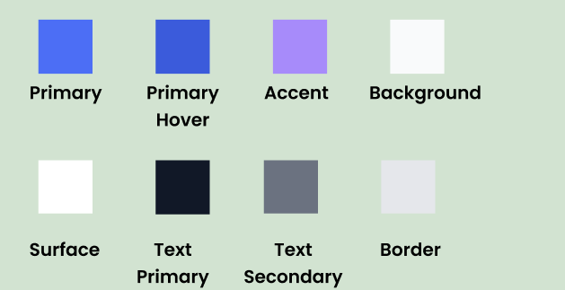
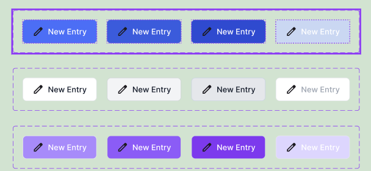

Color Roles
- Primary: Main actions
- Primary Hover: Interaction feedback
- Accent: Emphasis
- Background: Page layout
- Surface: Cards and containers
- Text Primary: Main readable text
- Text Secondary: Supporting text
- Border: Dividers and outlines
Foundations
Reusable color guidelines for hierarchy, readability, and consistent interaction styling across the LifeNote interface.

The LifeNote color system creates visual hierarchy, supports readability, and keeps the interface feeling calm and consistent.
The palette is intentionally limited so actions, content, and layout areas feel connected across the experience.
The color system is applied across reusable button styles to reinforce interaction hierarchy and create a consistent visual language throughout the product.
